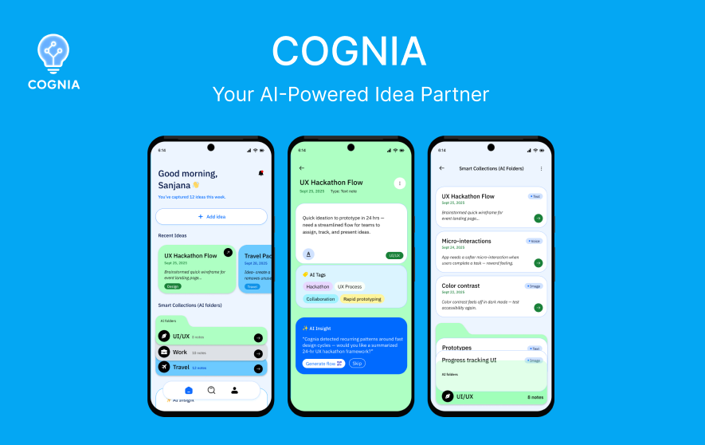
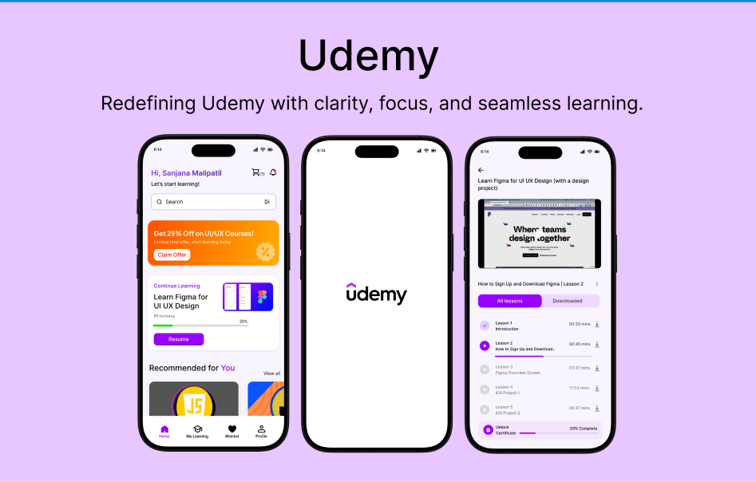
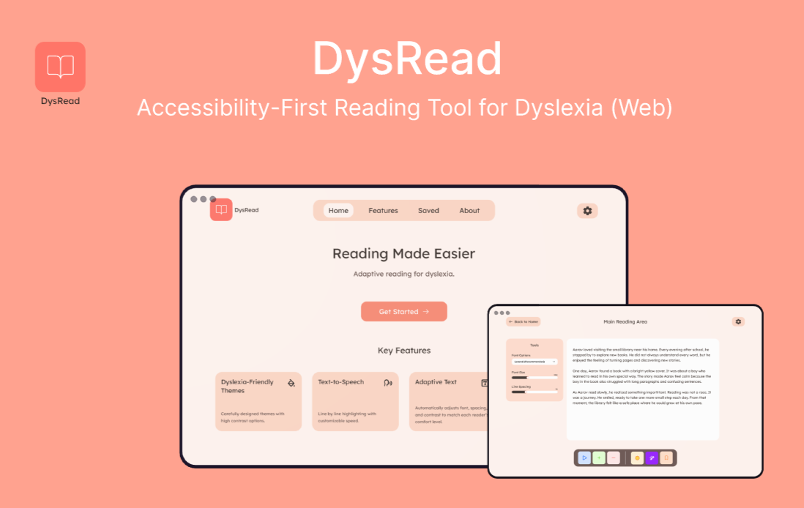

SM
Hi, I'm Sanjana Malipatil
I'm a UI/UX designer with a strong foundation in engineering, driven by a mission to transform complex technical problems into accessible and intuitive digital solutions. I specialize in applying core UX principles (WCAG, Fitts's Law) for measurable improvements in usability.
Featured Work

Cognia - AI-Powered Idea Partner
A scalable, AI-driven idea organization system designed to reduce manual tagging effort by 60% through smart capture flows and comprehensive Information Architecture.
View Full Case Study →
Udemy Mobile App Redesign
Improved user efficiency and simplified the primary course flow from 6 steps to 3, applying Hick's and Fitts's Laws for intuitive interaction and a hypothesized 50% efficiency boost.
View Full Case Study →
DysRead - Dyslexia-Friendly Web Platform
Enhanced digital accessibility and visual clarity by applying WCAG principles to optimize typography, color contrast, and grid, hypothesized to reduce visual distraction by 30%.
View Full Case Study →